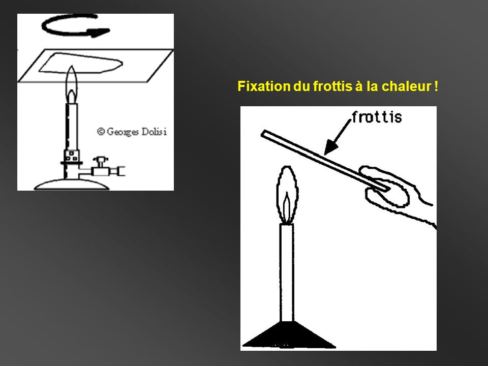

Un frottis fixe a pour but d'étaler les bactéries et les fixer sur une lame. Cette préparation est une étape préalable à la réalisation de coloration
Pour la réalisation d'un frottis, il faut le matériel suivant :
Une lame
Ose sterile
Alcool
Eau distillée
Plaque chauffante

premierement indiquer sur une lame propre
- vos initiales
- origine du produit
Puis sur le revers, indiquer la zone de réalisations du frottis
Finalement a l'aide d'une ose sterile, prelever de la suspensio, et déposer sur la lame.
étaler un peu la suspension bactérienne par des mouvements circulaires centrifuges.
Le frottis est mince et régulier
Sécher la lame sur la plaque chauffante à temperature modérée.
le frottis sec a une surface mate.
Elle tue les bactéries et les fait adhérer à la surface du verre sans altérer leur structure.
- recouvrire d'alcool la lame.
-attendre 3 minutes.
-rincer delicatementà l'eau distillée et secher.
Ou fixée avec le bec bunsen, ecraser 3x fois dans les flamme jaune du bec.
Retour à l'accueil